Shoot 4 Coins
-River of Sorrow, Left of the Statue
-Marketplace, Right of The Tipped Desk Outside of the Barrier
-Spartan Monument, the Side of a Handrail
-Cliff Ruins, Underside of a Table in the Forge Area
Apollo's Will
Obtain the Handle of Apollo's Will near the Upper Road in the following locations:
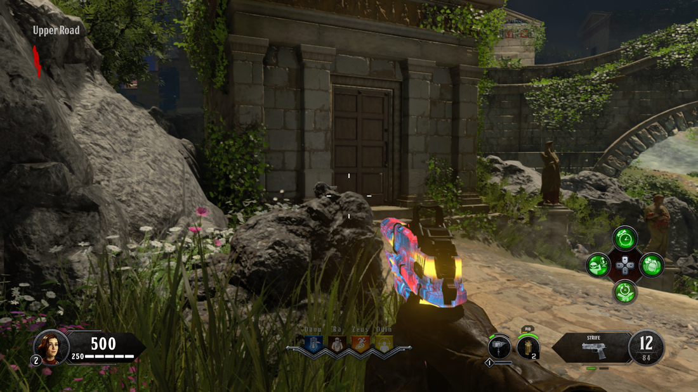
Obtain the Spear of Apollo's Will from any of the following locations:
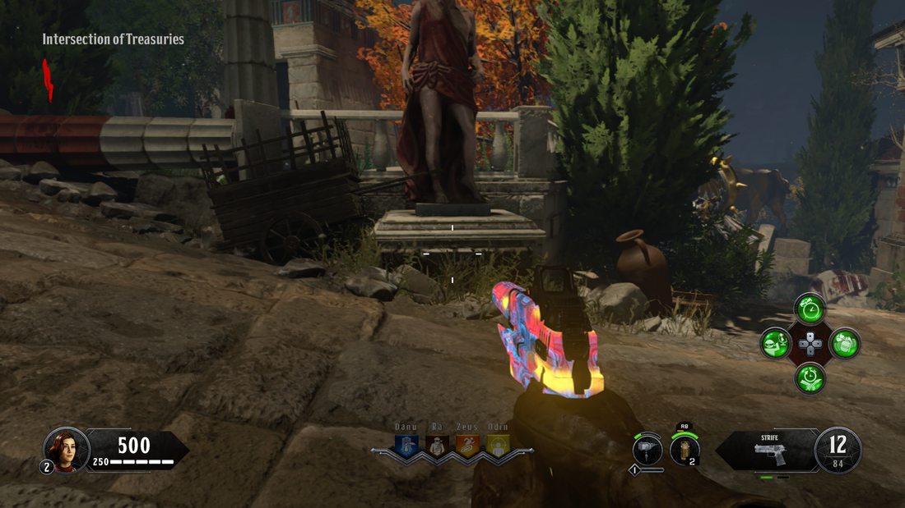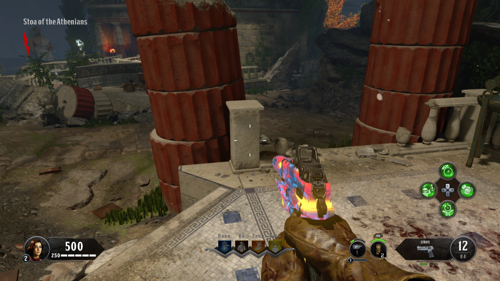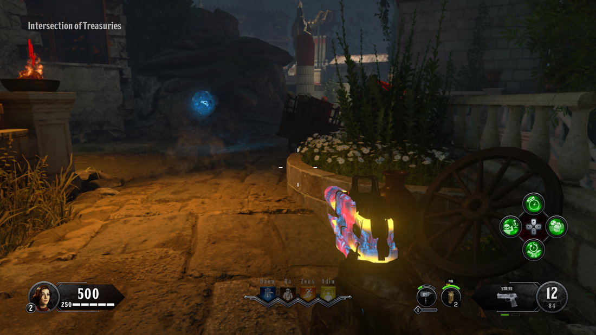
Obtain the Third Shield Piece of Apollo's Will by killing a Gegenees
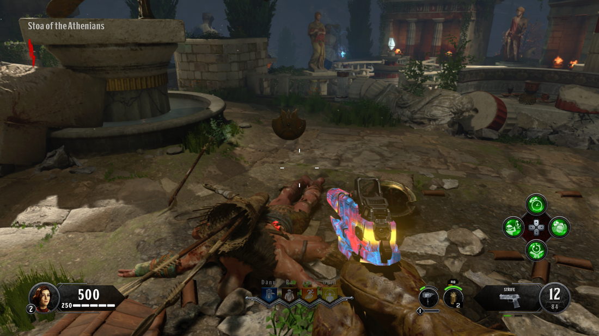
Pegasus Strike
Obtain the Tongs from River of Sorrow
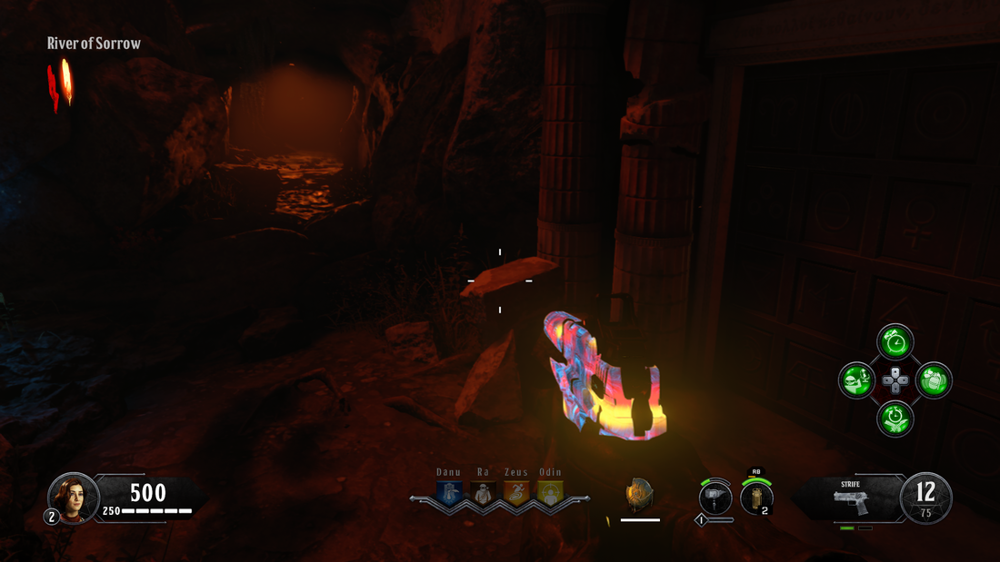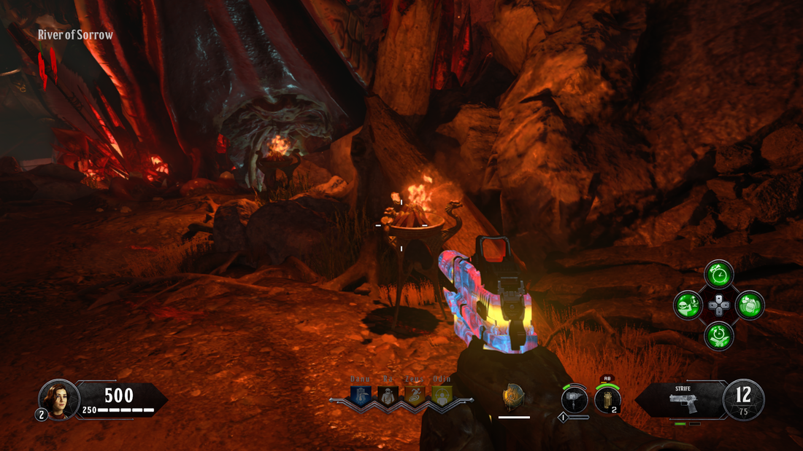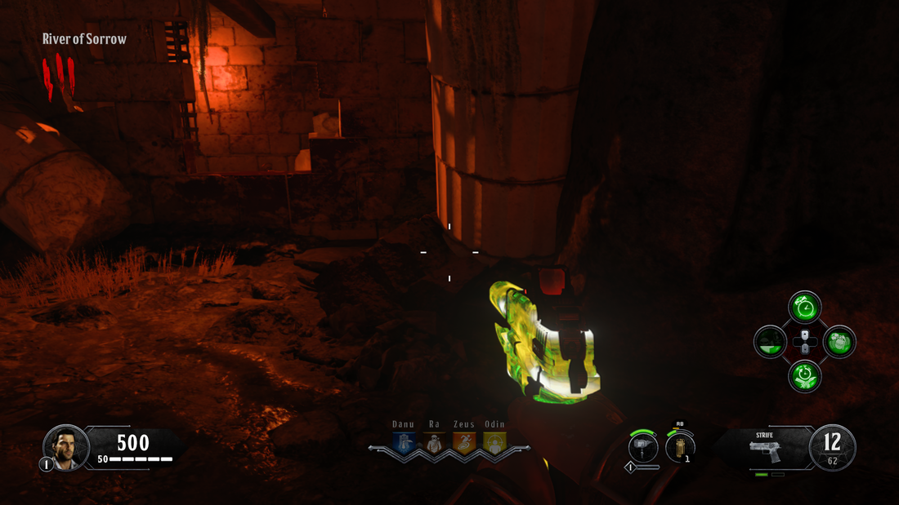
Obtain the Anvil from the Cliff Ruins
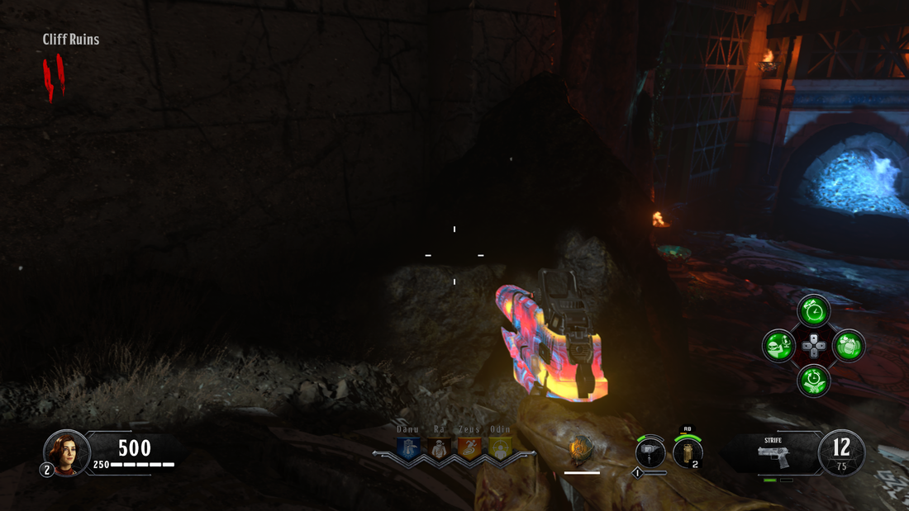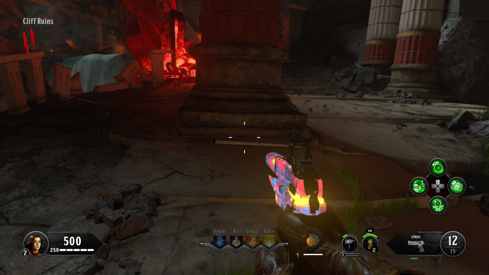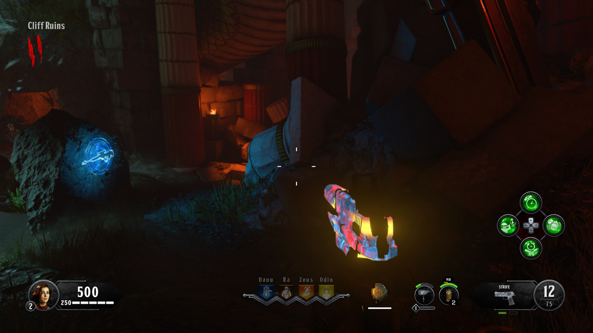
Obtain the Hammer from Python Pass
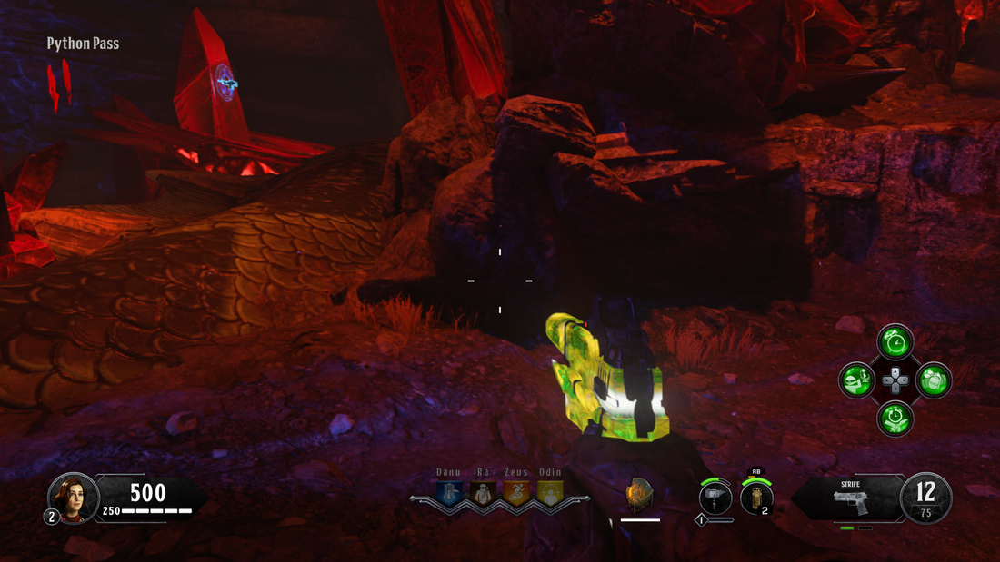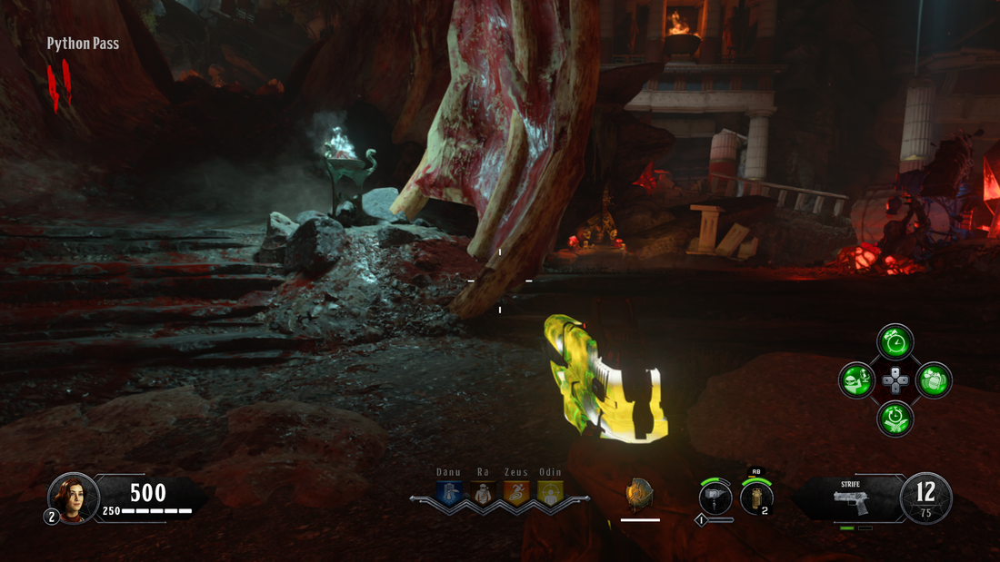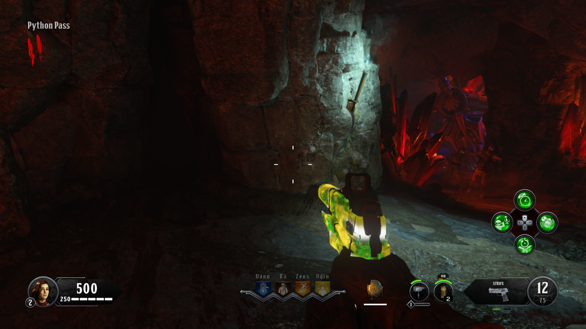
Go to the Forge Room in the Cliff Ruins, build the Pegasus Strike at the Forge Station
Pack-a-Punch
Activate the Sentinel Artifactin the Amphitheater, Skeletons and Zombies will Spawn
Survive until Pegasus arrives and Kills all Enemies, Finishing the Ritual
Obtain the Golden Bridle which can be found at one the following locations (A Gegenees will spawn)
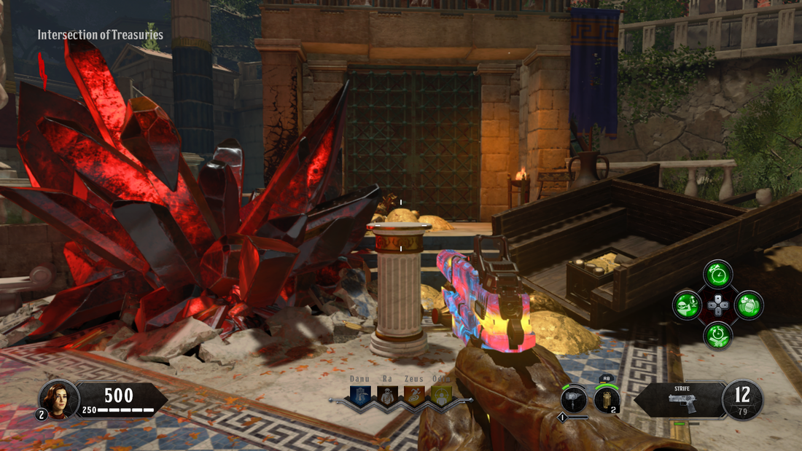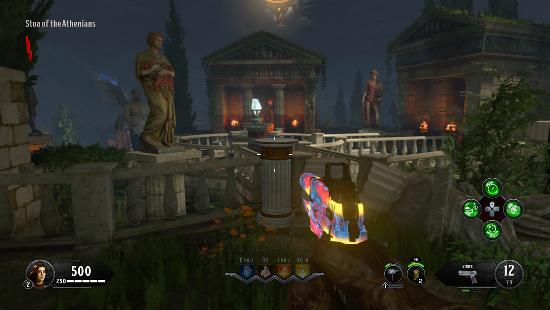
Go to the Spartan Monument and ride the Pegasus to River of Sorrow
Activate and use Pegasus to navigate to Python Pass
Locate an Eagle stuck within a Cage, drop the Cage by Shooting it (A Gegenees will Spawn)
Shoot the Door of each Cage using your Specialist Weapon, freeing the Eagles
Go to the Center of the World, and survive until the Eagles open Pack-a-Punch
God's Hand Wonder Weapon
-To obtain a Dormant Hand you must Melee any of the Following Locations which emit a Purple Glow
Hand of Charon
Fallen Hand of Charon
Obtain a Dormant Hand
Navigate to Python Pass, Place a Dormant Hand on the Charon Shrine
Activate the Shrine to begin the Initiation of Charon, and survive in the Circle
Once complete, you will Obtain the Fallen Hand of Charon
Redeemed Hand of Charon
Obtain the Fallen Hand of Charon
Travel to the Pack-a-Punch Area
Go to the Odin Area
Kill Zombies with the Fallen Hand of Charon in the River right beside Odin
"Drink" the Water in the River
Run around and Collect Hidden Coins and Deposit the 3 Real Ones in the Shrine
Most of the Coins are Fake, they say Extinguish the False Obol
Exalted Hand of Charon
Obtain All 4 Redeemed God Hands
Earn Rewards from Oracle's Tributes, until the Flame in the Temple of Apollo turns Blue
Melee the Blue Fire with the Shield to Ignite the Tip of the Spear
Locate the Pillar outside of the Temple of Apollo near the which emits a Faint Gas Leak noise
Throw the Spear of the Ignited Apollo's Will above the Pillar to Ignite it
Kill a Poison Catalyst Zombie in the Glowing Red Circle at the Charon Shrine in Python Pass
Continue to Kill Regular Zombies in the Circle until the Shrine no Longer Accepts Souls
A Red Symbol will Activate at the top of the Pack-a-Punch Machine in the Center of the World
Repeat the previous Step for each of the God Hands
Once all 4 God Shrines have been Charged, Interact with the Pack-a-Punch Machine to Accept Charon's Challenge and be Teleported to Shadow's Bank
Charon's Challenge Requires the Player to Defeat Blightfathers with Limited Ammo
Once complete, you will be Rewarded with the Exalted Hand of Charon
Hand of Hamera
Fallen Hand of Hamera
Obtain a Dormant Hand
Go to the Monument of Craterus, place a Dormant Hand on the Hemera Shrine
Activate the Shrine to begin the Initiation of Hemera
Survive in the Circle
Once complete, you will obtain the Fallen Hand of Hemera
Redeemed Hand of Hamera
Obtain the Fallen Hand of Hemera
Shoot 3 the Mirrors around the Map with a Bullet Based Weapon to Angle it Correctly
Shoot it with the Fallen Hand of Hemera, Locations:
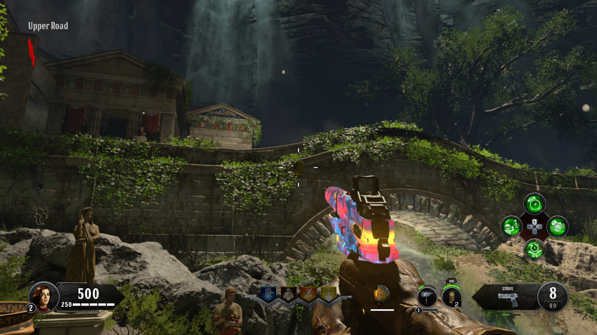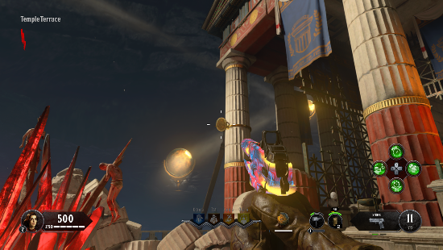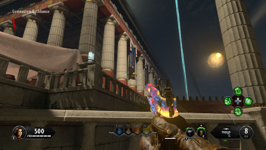
If done correctly the Light Ball should Land in a Bowl
Melee the Bowl with the Light in it with the Fallen Hand of Hemera, take it to the Shrine
Melee the Shrine to Transfer the Light Ball onto the Shrine
If you take too long to Melee the Shrine you will have to Re-Obtain the Ball of Light on your Hand
Once All 3 Balls of Light are on the Shrine, a Portal will Open, Enter it to Prove Yourself to Hemera
Once Complete you will be Teleported back to the Hemera Shrine with the Redeemed Hand of Hemera
Exalted Hand of Hamera
Obtain all 4 Redeemed God Hands
Earn Rewards from Oracle's Tributes, until the Flame in the Temple of Apollo turns Blue
Melee the Blue Fire with the Shield to Ignite the Tip of the Spear
Locate the Pillar outside of the Temple of Apollo near the which emits a Faint Gas Leak noise
Throw the Spear of the Ignited Apollo's Will above the Pillar to Ignite it
Kill an Electric Catalyst Zombie in the Glowing Yellow Circle at the Hemera Shrine in Monument of Craterus
Continue to Kill Regular Zombies in the Circle until the Shrine no Longer Accepts Souls
A Yellow Symbol will Activate at the top of the Pack-a-Punch Machine in the Center of the World
Repeat the previous Step for each of the God Hands
Once all 4 God Shrines have been Charged, Interact with the Pack-a-Punch Machine to Accept Hemera's Challenge and be Teleported to Light's Reflection
Hemera's Challenge requires the player to defeat Gegenees' with limited ammo
Once complete, you will be rewarded with the Exalted Hand of Hemera
Hand of Gaia
Fallen Hand of Gaia
Obtain a Dormant Hand
Go to the Spartan Monument, place a Dormant Hand on the Gaia Shrine
Activate the Shrine to begin the Initiation of Gaia
Survive in the Circle
Once complete, you will obtain the Fallen Hand of Gaia
Redeemed Hand of Gaia
Obtain the Fallen Hand of Gaia
Locate and Shoot 3 Plants with Red Crystals, Locations:
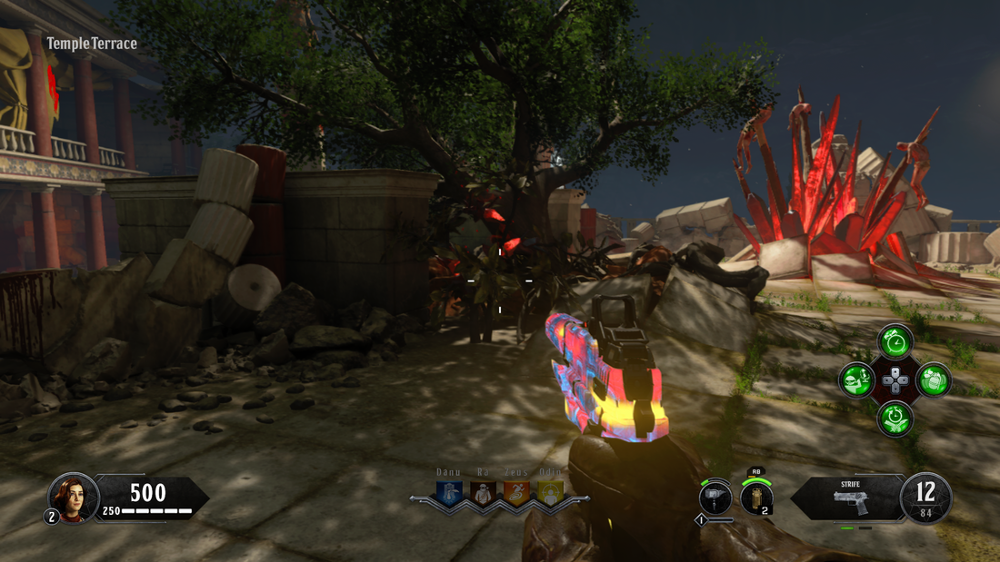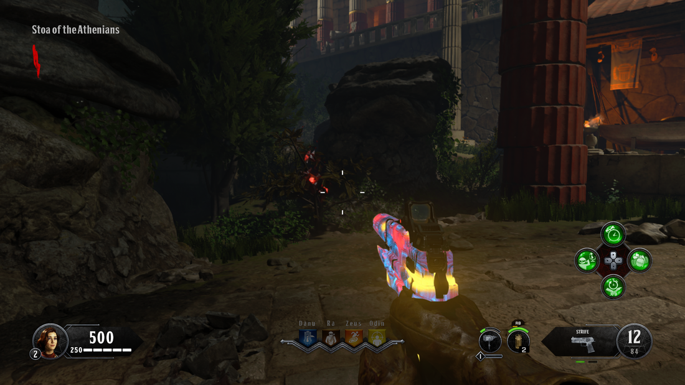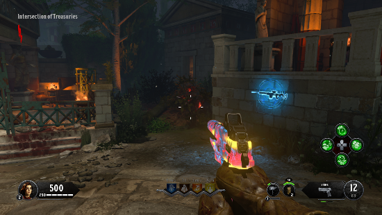
After Shooting the Crystals off of a Plant, Obtain the Seedling and Place it on the Shrine
Once 3 Seedlings of Gaia have been placed at the Gaia Shrine, Enter the Portal that Spawned at the Shrine
Once Complete you will be Teleported back to the Gaia Shrine with the Redeemed Hand of Gaia
Exalted Hand of Gaia
Obtain all 4 Redeemed God Hands
Earn Rewards from Oracle's Tributes, until the Flame in the Temple of Apollo turns Blue
Melee the Blue Fire with the Shield to Ignite the Tip of the Spear
Locate the Pillar Outside of the Temple of Apollo near the which emits a Faint Gas Leak noise
Throw the Spear of the Ignited Apollo's Will Above the Pillar to Ignite it
Kill a Fire Catalyst Zombie in the Glowing Green Circle at the Gaia Shrine at the Spartan Monument
Continue to Kill Regular Zombies in the Circle until the Shrine no Longer Accepts Souls
A Green Symbol will Activate at the Top of the Pack-a-Punch Machine in the Center of the World
Repeat the previous Step for each of the God Hands
Once all 4 God Shrines have been Charged, interact with the Pack-a-Punch Machine to Accept Gaia's Challenge and be Teleported to Earth's Rest
Gaia's Challenge Requires the Player to Defeat Catalyst Zombies with Limited Ammo
Once complete, you will be Rewarded with the Exalted Hand of Gaia
Hand of Ouranos
Fallen Hand of Ouranos
Obtain a Dormant Hand
Go to the Center of the World
Place a Dormant Hand on the Ouranos Shrine
Activate the Shrine to begin the Initiation of Ouranos
Survive in the Circle
Once complete, you will Obtain the Fallen Hand of Ouranos
Redeemed Hand of Ouranos
Obtain the Fallen Hand of Ouranos
Locate The 3 Large Arrows, Locations:
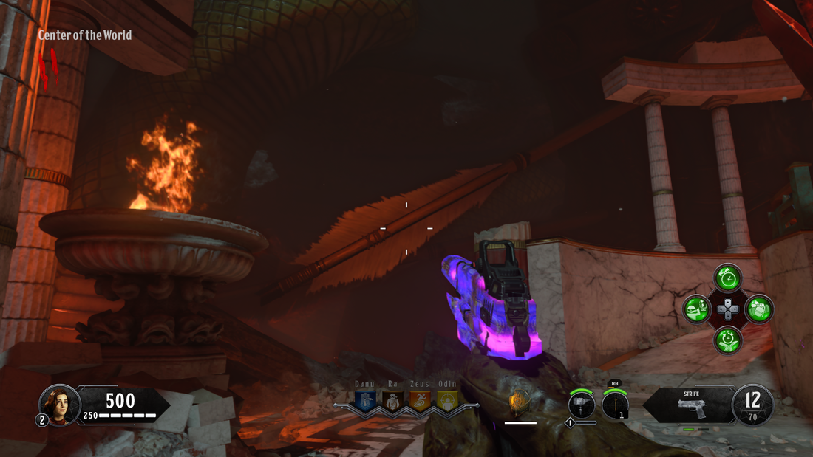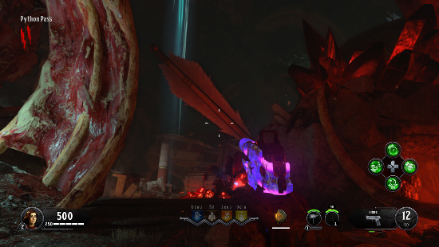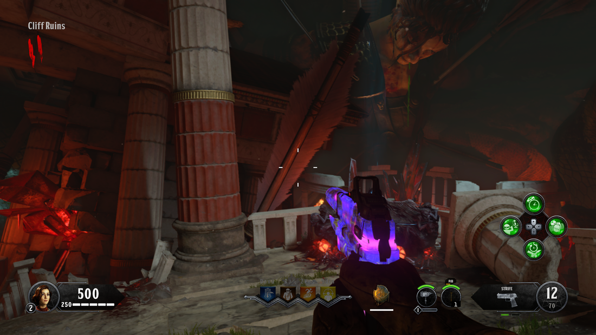
Using Fallen Hand of Ouranos, Blast a Zombie into an Arrow, causing a Feather to Fly
Shoot the Feather while it's in the air to direct it to the Ouranos Shrine
Repeat this process for each of the 3 Arrows
A Portal will open at the Ouranos Shrine, enter the Portal to Prove Yourself to Ouranos Survive the Trial
Once Complete you will be Teleported back to the Ouranos Shrine with the Redeemed Hand of Ouranos
Exalted Hand of Ouranos
Obtain All 4 Redeemed God Hands
Earn Rewards from Oracle's Tributes, until the Flame in the Temple of Apollo turns Blue
Melee the Blue Fire with the Shield to Ignite the Tip of the Spear
Locate the Pillar outside of the Temple of Apollo near the which emits a Faint Gas Leak noise
Throw the Spear of the Ignited Apollo's Will above the pillar to Ignite it
Kill a Water Catalyst Zombie in the Glowing Blue Circle at the Ouranos Shrine in the Center of the World
Continue to Kill Regular Zombies in the Circle until the Shrine no longer Accepts Souls
A Blue Symbol will Activate at the top of the Pack-a-Punch Machine in the Center of the World
Repeat the previous Step for each of the God Hands
Once all 4 God Shrines have been Charged, interact with the Pack-a-Punch Machine to Accept Ouranos' Challenge and be Teleported to Wind's Crest
Ouranos' Challenge Requires the Player to kill Skeletons with Limited Ammo
Once complete, you will be Rewarded with the Exalted Hand of Ouranos
Main Quest
Complete Oracle Tributes at an any Rarity
The Flame in Apollo's Temple will Light Blue when you've done enough
Melee the Blue Flame with the Spear of Apollo's Will
Locate 3 Oil Spills, and Light them with the Shield, Locations:
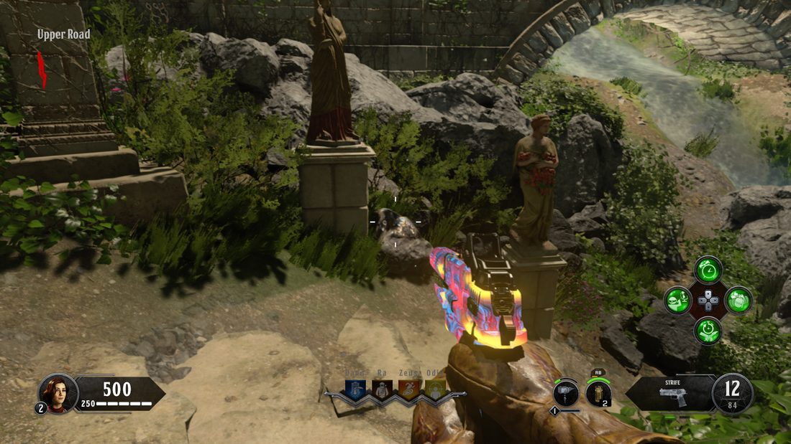
Obtain the Redeemed Hand of Charon
-Shoot a Blood Projectile at the Ground in Front of the Spartan Monument
-Stand in the Blood Projectile
-Shoot an Uncharged Projectile at each of the Statue Heads with Glowing Eyes
Using a Weapon, Locate and Destroy 3 Walls to Reveal 3 Rotating Cogs
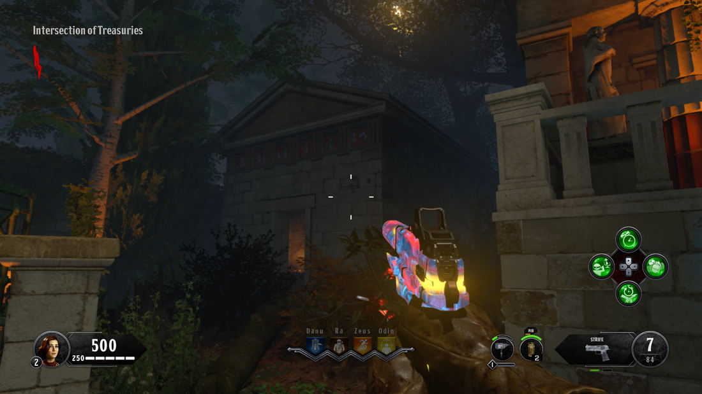
Throw the Spear of Apollo's Will at the Cogs, causing the Smaller Cog to connect
Once complete, the statues at the Stoa of Athenians will begin to Spin
Once all Statues are Facing Inward, Throw the spear of Apollo's Will at the 4th set of cogs
Go to the Intersections of Treasuries, and Locate the Ankh in the Chaos Crystal
Have a Gegenees to shield stun the Ankh, then pick it up
Place the Ankh in the Statue of Ra's Hand
Place the Redeemed Hand of Hemera at the Statue of Ra, causing a Beam to Fire
Defend the Statue of Ra from Skeletons that try to Block the Beam
A Chamber will be Revealed where the Beam Hit, Revealing Ra's Scepter
Pick up the Scepter and give it to Ra
Go to Offering of the Attalids, locate a Symbol to the left of Statue of Danu with branches on it
Shoot the Symbol with the Redeemed Hand of Gaia
Repeat this process for 2 more Symbols which spawn near the Top of the Statue of Danu
You must hit both Symbols with a Single Shot of the Redeemed Hand of Gaia
Repeat this Process once more for the next 3 Symbols
Once complete, a Gegenees will Spawn, Kill it and Pick up the Spear
Place the Spear in the Sundial, causing an Electric Line to appear
Kill an Electric Zombie on the Sundial to Activate it
Activate the Dial once the Blue Symbol has Rotated underneath the Slot with the line over it
Repeat this Process 2 more Times for the Two Inner Dials
If Failed, the Screen will Flash White
Go to the Amphitheater, find the Glowing Circles on the Floor corresponding to the God Hands
All Players must stand on their Respective Circles to Start the Sharpshooter Game
When a Player's Circle Glows, Stand on the Circle and Kill all of the Zombies of their color
The Charged Shot and Single Shot must be used, depending on the distance
Once 3 Rounds of 5 plays are completed, the Step is Complete
If you Fail 5 Times in a single attempt, you have to retry next round
Go to the door to the right of the Spitfire Wall-buy in the River of Sorrow
The Symbols must be Shot in Order
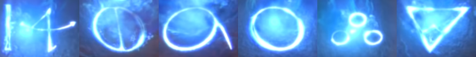
(If Shaw, or Bruno interact with the Door, a Cutscene will Play)
Go to the Top of the Stairs at the River of Sorrow, Find and Place the Pegasus Strike the Glowing Blue Symbol
Once complete, Pegasus will cause a Giant Ballista to spawn at the Bottom of the Stairs
Using the Redeemed Hand of Ouranos, Fire Charged Shots at the Ballista
Once complete, the Ballista will be Loaded and Aimed at the Python
Ignite the Spear of Apollo's Will, then Run through the Venom Trap while it's Activated in Python Pass
If done correctly, the Spear Tip will turn Green, Go back to the Ballista and Melee it
Once complete, the Ballista will Fire
A Portal to the Boss Fight will open in the Center of the World above Pack-A-Punch
Boss Fight
Shoot The Pegasus to Make it Fall on the Ground, you must Damage it with your Specialist Weapon
When you defeat Pegasus, Mount Olympus: Fountain, and Forest will be Overcome by Chaos Storms
Go to the Last Remaining Area, Mount Olympus: Columns, and Perseus will Absorb Pegasus and Attack you
When Perseus Strikes Lightning down, he will Teleport where he Struck, Shoot him until he Falls to his Knees
When he is down, Damage him with your Weapons
Once you do Enough Damage, He will Die and Drop a Key, the Ending Cutscene will Play

 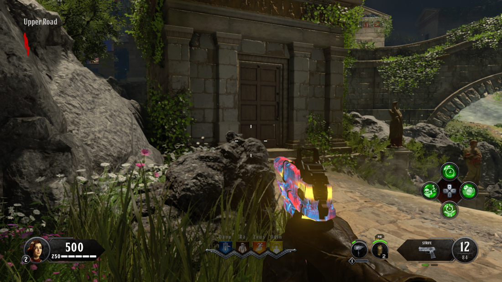
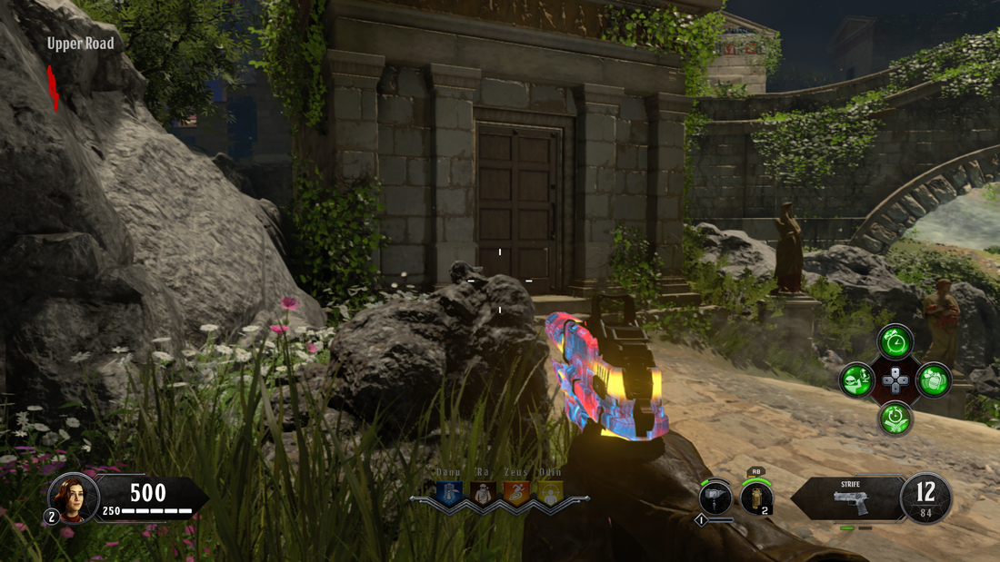


 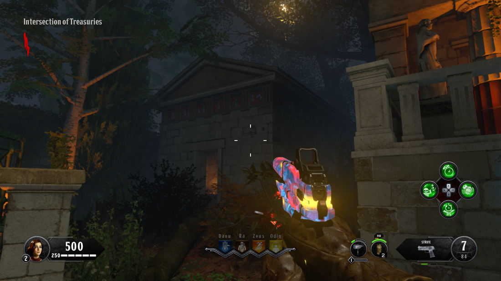
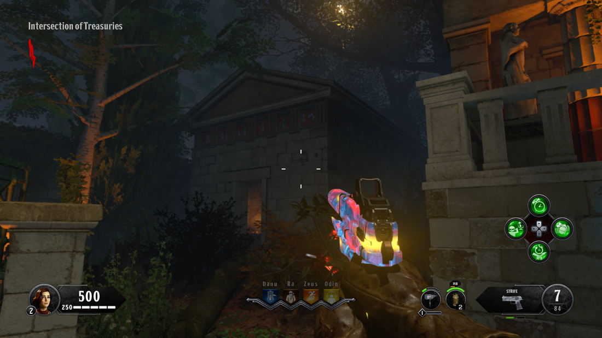